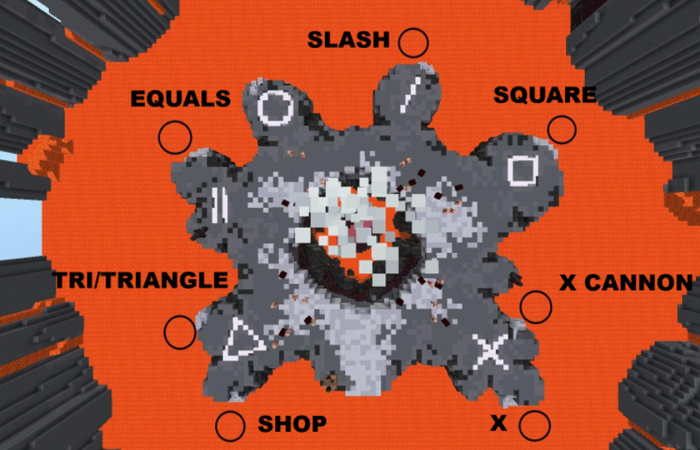

Kuudra is the end boss fight of the Crimson Isle, the final combat island in Skyblock as a whole. It is one of, if not the best boss fight throughout the entire game. It consists of only 3-4 stages of boss fight, until the boss fight of around 2 minutes (when optimized to semi-perfect) for a chance at some of the most insane profit, not to mention the extremly consistant amount of profit made in a single run of the boss fight.
What is so profitable and fun about Kuudra? How do you play it?
Reputation
Keys
The Boss Fight
This is all the 'general intricacies' as mentioned at the home page! I'll be talking about it all as breif yet detailed as I can, and then move to everything else mentioned in the home page.
Reutation
A simple word, a complex application! Reputation within Kuudra and the Crimson Isles start with the picking of one of two factions; the mages, and the barbarians. After such a choice is made, you need to do daily quests, defeat mini-bosses, and more to increase your reputation with your factions, but why? The reason behind this 'reputation grind' is becaeuse after you complete in introduction quest into unlocking Kuudra, you must have a required amount of reputation to proceed with joining the battle, so if you don't have enough reputation, you cannot join the battle, not play Kuudra, and not make the vast amounts of money it hides in with its great gameplay. The image below is showing the quest board at the mage faction where you get your daily quests.
Keys
Once the Kuudra boss fight is completed, you get a chest! This chest can contain loot from a useless item that still sells for 300 thousand coins, to a cool looking chestplate with 2 specific attributes worth at minimum, 160 million coins. But these chests come at a cost, and that cost is keys. A Key is reletively inexpensive, ranging from 400 thousand coins, to around 2 million, and you're not forced to use them after every run, so you don't need to spend them on something worth less than the amount you spent on the key, but the way to obtain can be monotonus when considering that the main ingredient to the key, is 2 nether stars. To explain, nether stars are items dropped by a Vanquisher, which spawns at a chance of 1/640 after a mob is killed on the Crimson Isles. Each Vanquisher drops 3 nether stars, and they take a good amount of time to get, but outside of that, with a little bit of time grinding out killing the easy mobs, you can get the higher tens of nether stars an hour, meaning lots and lots of keys to use to get great loot.
The Boss Fight
The boss fight to kuudra has 3 stages in the boss fights that are under the main Infernal (final) tier of Kuudra. These 3 stages are:
Gathering Crates
Building the Balista
Damaging the Boss
The 1st stage consists of gathering the materials that line the edges of the lava surrounded arena, after you pull the crates in with a fishing rod, you have to gather them over the course of a few seconds, and if you move to far away, or the boss picks you up and throws you away, you reset the time it takes to pick up the material again. If you finally get all 6 of the materials (1 doesn't spawn in (look at the image)), you can move to the next phase. The image below is the whole of the Kuudra boss fight's arena! Kuudra is a lava kraken with tentecales, so his tentecales will throw you away from the crates when trying to grab them. (The names on the images for the spots are based on the symbol or there location for communication between teammates.)

The 2nd stage is Building the Balista, which is after collecting all the materials, you have to bring them toward the center of the arena, and then after they are all placed, you need to start shifting and spam clicking the 6 spots where you placed the crates to build up the balista to 100%. During this time, hoards of mobs will be thrown into the arena with millions of health, they will try to attack and kill you, and also if they get to a crate, slowly unbuild it, setting back your progress. You will also have some time limits, as if you don't fully build the balista, a tentecal from Kuudra will slam down into the center, reseting a ton of your progress. If you make it through building the balista, you then need to then prepare for the next stage.
The 3rd and final stage of (4/5 tiers of) Kuudra is to finally damage the boss. This can work by someone lauching themselves into the mouth of the boss and stunning it but mining out its energy sources, which allows your team to start shooting Kuudra with bows to damage him until it dies! If you are in the first 2 stages of Kuudra, you can also fuel the balista with more crates found at the edge of the arena, and then use the balista to shoot Kuudra with a devestating blow dealing 100% of its health, but the former way is the only viable method for the 3rd and 4th tiers of Kuudra.
After all of this, you may finally get your loot! This will consist of an amount of Kuudra teeth and crimson essence based on the tier of Kuudra you are doing, and 2 random items from a huge loot pool. The essence and teeth make up enough money to pay for the keys in their entirity, but considering you can make million of profit per chest with the 2 random items, its best to not take every chest just because it is a little bit of profit.
Introduction
Kuudra has a great introduction. You have to go on a whole quest across the whole island of the Crimson Isles, the biggest island in Skyblock, to learn and find new things about the Crimson Isles, Kuudra, and just the lore behind Skyblock! The first stages of Kuudra don't need the most gear as well, so you can still get into it for a few completions to begin.
Early-game Progression
Unfortunatly, Kuudra, while having a great introduction, has quite a terrible early-game progression. The requirements to enter tiers that make money are already high enough in reputation, doing Kuudra without a few special expensive items is 200% less efficient, and the progression is just spend money to get a setup good enough to do all tiers.
End-game setup(s)
This is the whole progression of Kuudra, getting the gear to do the tiers. A base cost for the 4th tier is around 2 billion coins for the easiest role of the fight, stunning, and if you are doing dps at the 4th tier, around 3 billion coins. A hypermaxed setup, however, is from 30 billion coins for a 100% maxed setup, and around 7 billion for a realistic hypermaxed setup. This consists of (100%) 15 starred, 10 10 mp mr aurora, a wither impact hyperion, a 1 billion bank golden dragon pet, 15 starred 10 10 ll mp terror armor and a warden helmet, not included absurd costs of art of wars, art of peaces, crazy magically powers, and more. You do NOT need to know anything of what I just said, it would take too long to explain, but everything here can be toned done to lower tiers of aurora and terror armor, different pets, different attributes, and so much more to bring down the price by billions at a time.
MONEY!!!
Kuudra at early game for basic/hot (1st/2nd tiers)can make about 5 million an hour for around 60 million coins, a mid-game of burning/fiery (3rd/4th tiers) 50 million an hour for 2.5-3.5 billion coins, and 100+ million coins an hour at 5 billion coins. To mention, these setups are the BEST in the game for most other aspects of skyblock, so the sink of 2.5-3.5 billion well actually help you outside of just Kuudra, so its different from something like mining or farming, which only have 1 purpose for an gear set, and no other purposes.
Time dedication
The time dedication for Kuudra AFTER you have obtained so much gear is around 50+ hours to make back a hypermaxed setup, BUT since you need to work up from basic tier, and you need to reputation grind, and you need to grind out Vanquishers, it can be a process of 150 hours to make it to the end-game of this skill.
The overall rating
10/10 This part of Skyblock is something I'm starting to get into, with the 4+ billion coin setup at hand, and it is better than dungeons could every be as a boss fight, the fight is only a few minutes, the profit is consistant, the gear is the best in the game for combat on all other aspects of Skyblock, and most importantly to anything in this little world of Skyblock and just games in general, its fun.